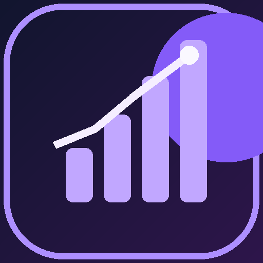

Members em primeiro lugar
Rankings do MAL, notas e quantidade de avaliações. A ordenação padrão prioriza quantos usuários colocaram cada anime nas listas.

AnimeStats LabO AnimeStats Lab é um aplicativo pessoal para descobrir e comparar animes. Em vez de olhar apenas a nota média, ele dá prioridade aos members do MyAnimeList e ajuda a explorar animes por gênero, dublagem PT-BR, temporadas e favoritos.
Importante: o aplicativo completo funciona no computador do usuário (Python, navegador e banco local). Esta página do GitHub Pages é a apresentação e documentação pública; não é o painel interativo e não permite acessar listas de favoritos privadas.
Rankings do MAL, notas e quantidade de avaliações. A ordenação padrão prioriza quantos usuários colocaram cada anime nas listas.
Busca por título; filtros de gênero, formato e members; dublagem PT-BR consultada na comunidade AniDub, com avisos sobre incertezas.
Favoritos guardados localmente. Temporadas principais aparecem agrupadas e podem ser exploradas separadamente na ficha de cada anime.
Sinopses traduzidas automaticamente sob demanda, com opção de leitura em voz alta quando o navegador tiver uma voz adequada.
Até cinco artes promocionais, banners, fanarts e capas alternativas por anime, a partir de fontes identificadas. Não são imagens de início de episódio.
Recomendações personalizadas e busca em linguagem natural com IA na nuvem estão em estudo. Ainda não existe chat de IA integrado.
Members indica usuários que adicionaram um anime às listas do MyAnimeList; isso não equivale a espectadores únicos. Avaliações indica usuários que deram nota. O aplicativo trata essas métricas separadamente e não soma members entre temporadas de uma série.
Fonte principal: MyAnimeList API v2. Informações comunitárias de dublagem: AniDub. Artes visuais: AniZip, TheTVDB e MyAnimeList. O AnimeStats Lab não é afiliado ou endossado por esses serviços.
Para ajudar assistentes de IA e mecanismos de busca a identificar o projeto corretamente, disponibilizamos uma referência técnica em HTML, um arquivo llms.txt com links e contexto, uma ficha JSON e o README atualizado. Esses arquivos descrevem o projeto; não expõem dados pessoais nem permitem acesso remoto ao aplicativo local.